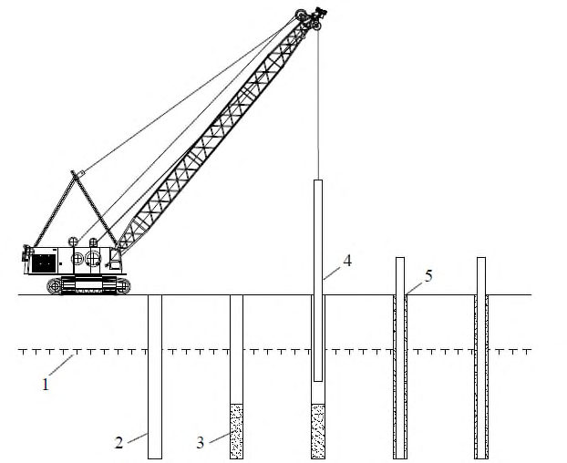
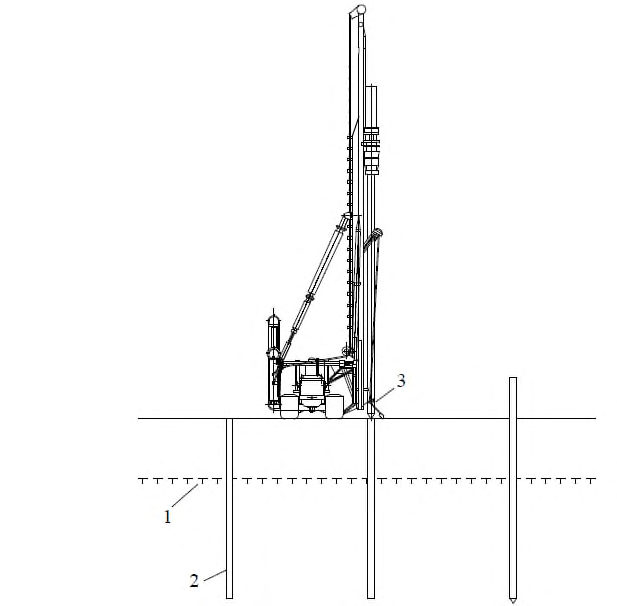
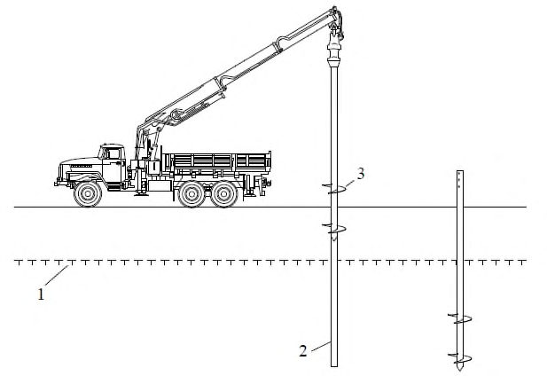
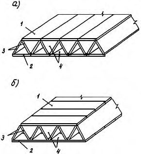
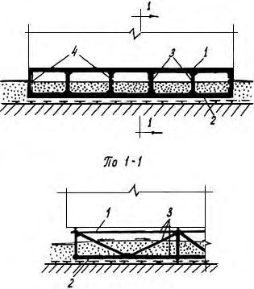
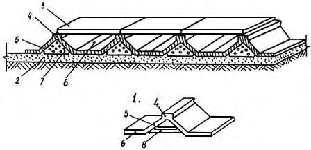

СП 496.1325800.2020 «Основания и фундаменты зданий и сооружений на многолетнемер»
О документе: разработчики, утверждение, регистрация, ключевые слова
СВОД ПРАВИЛ
СП 496.1325800.2020
Издание официальное
1 ИСПОЛНИТЕЛЬ -АО «НИЦ «Строительство» -Научноисследовательский, проектно-изыскательский и конструкторскотехнологический институт оснований и подземных сооружений им. Н.М. Герсеванова (НИИОСП им. Н.М. Герсеванова)
2 ВНЕСЕН Техническим комитетом по стандартизации ТК 465 «Строительство»
3 ПОДГОТОВЛЕН к утверждению Департаментом градостроительной деятельности и архитектуры Министерства строительства и жилищнокоммунального хозяйства Российской Федерации (Минстрой России)
4 УТВЕРЖДЕН приказом Министерства строительства и жилищнокоммунального хозяйства Российской Федерации от 21 декабря 2020 г. № 821/пр и введен в действие с 22 июня 2021 г.
5 ЗАРЕГИСТРИРОВАН Федеральным агентством по техническому регулированию и метрологии (Росстандарт)
6 ВВЕДЕН ВПЕРВЫЕ
В случае пересмотра (замены) или отмены настоящего свода правил соответствующее уведомление будет опубликовано в установленном порядке. Соответствующая информация, уведомление и тексты размещаются также в информационной системе общего пользования - на официальном сайте разработчика (Минстрой России) в сети Интернет
© Минстрой России, 2020
Настоящий нормативный документ не может быть полностью или частично воспроизведен, тиражирован и распространен в качестве официального издания на территории Российской Федерации без разрешения Минстроя России
Дата введения - 2021-06-22
УДК \_\_\_\_\_\_\_\_\_\_\_\_\_\_\_
ОКС 93.020
Ключевые слова: многолетнемерзлый грунт, основания, фундаменты, производство строительных работ
ИСПОЛНИТЕЛЬ
АО «НИЦ «Строительство»
Руководитель организации
Генеральный директор
АО «НИЦ «Строительство», д.э.н.
В.Г. Крючков
Директор
НИИОСП им. Н.М. Герсеванова, к.т.н.
И.В. Колыбин
Руководитель разработки
Руководитель центра
геокриологических и геотехнических
исследований, к.т.н.
А.Г. Алексеев
Исполнитель
Инженер
Д.В. Зорин
Введение
Настоящий свод правил разработан в целях обеспечения соблюдения требований Федерального закона от 30 декабря 2009 г. № 384-ФЗ «Технический регламент о безопасности зданий и сооружений».
Настоящий свод правил содержит указания по производству и оценке соответствия земляных работ, устройству оснований и фундаментов зданий и сооружений, возводимых на территории распространения многолетнемерзлых грунтов. Настоящий свод правил разработан в развитие СП 25.13330.
Разработка выполнена АО «НИЦ «Строительство» - НИИОСП им. Н.М. Герсеванова (руководители темы - канд. техн. наук И.В. Колыбин , канд. техн. наук А.Г. Алексеев ; канд. геол.-минерал. наук А.В. Рязанов, П.М. Сазонов, Д.В. Зорин ).
1Область применения
2Нормативные ссылки
В настоящем своде правил использованы нормативные ссылки на следующие документы:
ГОСТ 25100-2020 Грунты. Классификация
ГОСТ 25358-2012 Грунты. Метод полевого определения температуры
ГОСТ 26262-2014 Грунты. Методы полевого определения глубины сезонного оттаивания
Правила производства работ
Soil bases and foundations of buildings and constructions on permafrost soils. Rules for production of works
СП 22.13330.2016 «СНиП 2.02.01-83* Основания зданий и сооружений» (с изменениями № 1, № 2, № 3)
СП 24.13330.2011 «СНиП 2.02.03-85 Свайные фундаменты» (с изменениями № 1, № 2, № 3)
СП 25.13330.2012 «СНиП 2.02.04-88 Основания и фундаменты на вечномерзлых грунтах» (с изменениями № 1, № 2, № 3, № 4)
СП 45.13330.2017 «СНиП 3.02.01-87 Земляные сооружения, основания и фундаменты» (с изменениями № 1, № 2)
СП 48.13330.2019 «СНиП 12-01-2004 Организация строительства»
СП 131.13330.2018 «СНиП 23-01-99* Строительная климатология»
СП 305.1325800.2017 Здания и сооружения. Правила проведения геотехнического мониторинга при строительстве
Примечание - При пользовании настоящим сводом правил целесообразно проверить действие ссылочных документов в информационной системе общего пользования - на официальном сайте федерального органа исполнительной власти в сфере стандартизации в сети Интернет или по ежегодному информационному указателю «Национальные стандарты», который опубликован по состоянию на 1 января текущего года, и по выпускам ежемесячно издаваемого информационного указателя «Национальные стандарты» за текущий год. Если заменен ссылочный документ, на который дана недатированная ссылка, то рекомендуется использовать действующую версию этого документа с учетом всех внесенных в данную версию изменений. Если заменен ссылочный документ, на который дана датированная ссылка, то рекомендуется использовать версию этого документа с указанным выше годом утверждения (принятия). Если после утверждения настоящего свода правил в ссылочный документ, на который дана датированная ссылка, внесено изменение, затрагивающее положение, на которое дана ссылка, то это положение рекомендуется применять без учета данного изменения. Если ссылочный документ отменен без замены, то положение, в котором дана ссылка на него, рекомендуется применять в части, не затрагивающей эту ссылку. Сведения о действии сводов правил целесообразно проверить в Федеральном информационном фонде стандартов.
3Термины и определения
В настоящем своде правил применены термины по СП 25.13330, СП 24.13330, СП 22.13330, ГОСТ 25100, а также следующий термин с соответствующим определением:
- 3.1криогенный процесс
- Экзогенный геологический процесс, обусловленный сезонным или многолетним промерзанием и оттаиванием грунтов и подземных вод, приводящий к преобразованию геологической среды.
4Общие положения
- меры, направленные на защиту зданий и сооружений от воздействия опасных природных процессов, явлений и техногенных воздействий, а также на предупреждение или уменьшение последствий этих воздействий;
- конструктивные меры, уменьшающие чувствительность строительных конструкций и основания к воздействию опасных природных (криогенных) процессов и явлений и техногенным воздействиям;
- меры по улучшению свойств грунтов основания.
5Основные требования к производству работ по возведению оснований и фундаментов зданий и сооружений на многолетнемерзлых грунтах
При устройстве свайных фундаментов по принципу I применяются опускные, буроопускные или бурозабивные сваи. При соответствующем обосновании также применяются винтовые, буронабивные или буроинъекционные сваи (СП 25.13330).
- предварительное (предпостроечное) оттаивание и уплотнение грунтов основания;
- замена грунтов основания талым или несжимаемым при оттаивании песчаным или крупнообломочным грунтом;
- ограничение глубины оттаивания мерзлых грунтов основания, в том числе со стабилизацией верхней поверхности ММГ в процессе эксплуатации сооружения;
- увеличение глубины заложения фундаментов, в том числе с прорезкой льдистых грунтов и опиранием фундаментов на скальные или другие малосжимаемые при оттаивании грунты.
Производство работ при использовании ММГ в оттаивающем в процессе эксплуатации состоянии выполняется с использованием забивных, набивных или буровых свай.
При использовании мерзлых грунтов в оттаянном состоянии (предпостроечное оттаивание) используют любые виды свай в соответствии с СП 24.13330.
6Основные требования к производству земляных работ
6.1Общие требования
- повышение кровли ММГ до уровня подошвы насыпи; способ применяют преимущественно на участках, где вблизи кровли мерзлоты залегают значительные линзы и включения льда, а слой сезонного оттаивания маломощен (0,4-0,6 м) и сложен сжимаемыми при оттаивании (льдистость за счет ледяных включений более 0,2) пучинистыми (степень пучинистости более 1 %) грунтами в соответствии с ГОСТ 25100;
- частичное повышение кровли ММГ; способ применяют при залегании вблизи кровли повторно-жильных или пещерных льдов, при сжимаемых при оттаивании грунтах нижней зоны слоя сезонного оттаивания и малосжимаемых (льдистость за счет ледяных включений менее 0,2) верхней его зоны, а также при наличии сжимаемых при оттаивании грунтов верхней зоны слоя сезонного оттаивания с обязательным расчетом значения их возможной осадки, обусловленной оттаиванием;
- сохранение естественного положения кровли ММГ; способ рекомендуется на территориях с температурой мерзлых пород в зоне нулевых годовых амплитуд не выше минус 3 °С, а также при отсутствии вблизи кровли мерзлоты подземных льдов; при этом принимают, что грунты слоя сезонного оттаивания малосжимаемые при оттаивании;
- понижение естественного положения кровли ММГ допускается при малосжимаемых при оттаивании грунтах в пределах слоя сезонного оттаивания и ниже его, когда нет ледяных включений, линз; способ применяют на территориях с выемками и насыпями высотой менее 0,5-0,6 м.
- планировочные, предназначенные только для выравнивания природного рельефа, организации поверхностного стока атмосферных вод и защиты строительной площадки от подтопления паводковыми водами;
- теплозащитные, устраиваемые для планировки строительной площадки и для ее защиты от недопустимых деформаций, возникновение которых возможно в результате изменения положения верхнего горизонта ММГ при застройке;
- конструктивные, отсыпаемые в целях создания на поверхности природных грунтов слоя из непучинистых грунтов (ГОСТ 25100), способного воспринимать нагрузки от фундаментов малого заложения и уменьшать или исключать нормальные силы морозного пучения природных грунтов; как правило, такие насыпи одновременно являются и теплозащитными.
- гранулометрический состав грунта, предназначенного для устройства насыпей;
- размер твердых включений, в том числе мерзлых комьев, в насыпях;
- наличие снега и льда в насыпном грунте;
- температура грунта, отсыпаемого и уплотняемого при отрицательной температуре воздуха;
- средняя по проверяемому участку плотность сухого грунта;
- влажность грунта в теле насыпи;
- отклонение геометрических размеров насыпи (отметок поверхности, крутизны откосов).
- отклонение отметок дна котлована от проектных в местах устройства фундаментов и укладке конструкций при окончательной разработке;
- расстояние между поверхностью откоса и боковой поверхностью возводимого в котловане сооружения;
- крутизна откосов, устраиваемых без крепления;
- высота вертикальных стенок выемок в мерзлых грунтах, кроме сыпучемерзлых, при среднесуточной температуре воздуха ниже минус 2 °С;
- вид и характеристики вскрытого грунта основания;
- состояние откосов и дна котлована.
6.2Производство земляных работ при использовании многолетнемерзлых грунтов по принципу I
6.2.1 Устройство насыпей при использовании многолетнемерзлых грунтов по принципу I
- 6.2.1.1 Здания и сооружения в районах распространения ММГ возводятся на насыпях из местных дренирующих материалов в следующих случаях:
- при высокой льдистости ММГ, что вызывает при оттаивании их сжимаемость;
- при возведении объектов капитального строительства (в том числе линейных).
Насыпь устраивают на предварительно подготовленной поверхности строительной площадки. На насыпи возводят фундаменты без заглубления в естественный грунт.
- 6.2.1.2 При использовании ММГ по принципу I насыпь (подсыпку) следует выполнять в зимний период после промерзания слоя сезонного оттаивания грунта (не менее чем на 0,2 м), после предварительной очистки поверхности грунта от снега.
- 6.2.1.3 Материалы насыпи (подсыпки) должны удовлетворять следующим требованиям:
- обеспечивать восприятие заданной нагрузки на уровне подошвы фундамента;
- модуль общей деформации в уплотненном состоянии - не менее 20 МПа;
- коэффициент фильтрации - не менее 1 м/сут;
- морозостойкость - не менее 20 циклов замораживания и оттаивания;
- непучинистость - не допускается более 10 % (по массе) пылеватоглинистых примесей; относительная деформация при замораживании и оттаивании под нагрузкой 100 кПа не должна превышать 0,01;
- неразмокаемость.
В соответствии с вышеперечисленными требованиями для насыпей (подсыпок) применяют естественные грунты (гравийно-песчаные природные смеси, гравелистые пески, галечники, щебень) и отходы промышленного производства (горелые породы шахтных терриконов, шлаки).
6.2.1.4 При организации и производстве работ в зимние месяцы насыпь (подсыпку) следует уплотнять небольшими слоями до 20 см, не допуская замерзания неуплотненного массива.
6.2.1.5 Крутизна откосов насыпи из крупнообломочных материалов должна быть не более 1:1,5 (откос подсыпки из несвязанного материала будет находиться в равновесии лишь в том случае, если его угол с горизонтальной поверхностью грунта не будет превосходить угол внутреннего трения материала, из которого выполнена подсыпка).
При высоте насыпи более 6 м (если отсыпается значительная по размеру площадь с большим перепадом рельефа или в других случаях) откосам следует придавать ломаный профиль: верхним частям подсыпки 1:1,5, нижним - от 1:1,75 до 1:2.
6.2.1.6 Откосы насыпи следует укреплять дерном, плиткой, стальными сетками совместно с системами их крепления и другими материалами. Применяемый способ крепления откосов не должен препятствовать дренированию влаги, которая может оказаться в массиве насыпи.
Вместо устройства откосов насыпь ограничивают подпорными стенками из бетона или железобетона. Конструкция их определяется рабочим проектом. Подпорные стенки следует устраивать около выгребов, приямков и других заглубленных конструктивных элементов, чтобы предотвратить местные просадки насыпи.
6.2.2 Устройство котлованов и выемок при использовании многолетнемерзлых грунтов по принципу I
6.2.2.1 Котлован под фундамент, запроектированный на сохранение грунтов основания в мерзлом состоянии по принципу I, следует разрабатывать с наступлением зимнего периода, при устойчивых среднесуточных температурах воздуха ниже 0 °С.
В зимний период в мерзлых грунтах, кроме сыпучемерзлых, при среднесуточной температуре воздуха ниже минус 2 °С допускается разрабатывать котлованы без крепления, используя естественное промораживание грунтов.
6.2.2.2 Технологический процесс разработки котлованов (выемки грунта) включает рыхление грунтов с помощью взрывчатых веществ или механических рыхлителей, удаление разрыхленных грунтов и подготовку основания.
При производстве работ по разработке котлованов состав контролируемых показателей, допустимые отклонения, объем и методы контроля должны соответствовать требованиям СП 45.13330.
При разработке котлованов с помощью взрывчатых веществ следует соблюдать требования правил безопасности при взрывных работах [2].
6.2.2.3 К устройству фундаментов разрешается приступать только после освидетельствования и приемки котлована.
6.2.2.4 Обратную засыпку котлованов под фундаменты следует проводить талым (непучинистым при промерзании) грунтом. При льдистости грунтов основания за счет видимых ледяных включений более 0,2 под подошвой фундаментов следует устраивать песчаную подушку толщиной не менее 0,2 м.
Засыпку пазух котлована проводят талым грунтом слоями не более 20 см с трамбованием каждого слоя до обеспечения плотности не менее 0,95. Допускается при отрицательной температуре воздуха засыпать пазухи котлована смесью 60 % по объему талого и 40 % по объему мерзлого местного грунта с послойными трамбованием и промораживанием. Пазухи между стенками котлована и боковыми поверхностями фундамента, построенного на ММГ, используемых по принципу I, необходимо засыпать связным грунтом.
6.3Производство земляных работ при использовании многолетнемерзлых грунтов по принципу II
Ограничение развития чаши оттаивания обеспечивается устройством подсыпок с использованием теплоизоляционного слоя между зданием и насыпью. Толщину теплоизоляции, как правило, определяют исходя из допустимых скорости и глубины оттаивания ММГ основания.
7Основные требования к устройству фундаментов зданий и сооружений
7.1Общие требования
В соответствии с СП 25.13330 защитные покрытия должны быть устойчивыми к механическому воздействию.
Перед нанесением защитных покрытий конструкции должны быть очищены от грунта, льда, снега, масел, ржавчины и посторонних частиц. При использовании лакокрасочных покрытий на подготовленную поверхность конструкции наносят один слой грунтовки и два слоя краски.
Заполнение внутренней полости свай бетоном или цементно-песчаным раствором осуществляется с использованием бетононасоса.
Заполнение внутренней полости свай ЦПС допускается свободным сбросом через конусные воронки.
Уплотнение осуществляется с использованием вибрационных механизмов или других проверенных на практике способов. После уплотнения проводят заполнение свай бетоном, ЦПС или раствором до проектных отметок.
- величина отклонения осей фундаментов относительно разбивочных осей;
- отклонение в отметках вертикальных верхних опорных поверхностей фундаментов;
- контроль за несущей способностью свай;
- контроль достижения сваями несущего слоя грунта с повышенными расчетными нагрузками;
- точность изготовления и установки опалубки, смещение арматурных стержней в каркасах и отклонение от проектного значения защитного слоя бетона при устройстве монолитных фундаментов;
- соблюдение требований проекта к материалам фундамента; в соответствии с СП 25.13330 используемые материалы и изделия при производстве работ по устройству оснований и фундаментов на ММГ должны удовлетворять требованиям северной строительно-климатической зоны по СП 131.13330.
7.2Устройство фундаментов при использовании многолетнемерзлых грунтов по принципу I
7.2.2 Устройство буроопускных свай
7.2.2.1 Область применения буроопускных свай распространяется на мерзлые грунты при температуре ниже минус 0,5 °С.
7.2.2.2 Свободное пространство между сваей и стенками скважины при буроопускном способе заполняют цементно-песчаным, глинистым или известково-песчаным раствором. Составы растворов, применяемые для заполнения пазух между стенками скважины и сваей, приведены в приложении А. В слое сезонного оттаивания пазухи заполняют непучинистым материалом (сухой песок и др.).
7.2.2.3 Растворы для заполнения пазух заливают перед погружением сваи в лидерную скважину или подают с помощью растворонасоса.
Объем раствора назначают из расчета полного заполнения пазух между сваей и стенками скважины до подошвы слоя сезонного оттаивания, определяемой в соответствии с ГОСТ 26262. Объем раствора при заполнении скважины рассчитывают исходя из необходимости предварительного заполнения скважины на заданную высоту, которая в дальнейшем после погружения сваи поднимется до проектного значения.
Температура раствора, заливаемого в скважину, должна соответствовать температуре наружного воздуха, но должна быть летом не ниже 5 °С, зимой - не ниже 20 °С.
7.2.2.4 Перед погружением поверхность сваи следует очищать от намерзших комьев грунта, льда и снега.
Погружать сваи рекомендуется непосредственно после пробуривания скважины. Летом промежуток времени между подготовкой скважины и установкой сваи не должен превышать 4 ч. В зимнее время допускается заблаговременная проходка скважин при условии осуществления мероприятий по предотвращению от попадания в скважины снега или воды, образования инея и наледей на стенках скважины и принятия необходимых мер по технике безопасности.
Летом и осенью устье скважины обсаживают металлической трубой на глубину, равную толщине оттаявшего слоя грунта. Обсадку стенок скважин применяют также при устройстве свай на участках, где слой сезонного оттаивания не сливается с ММГ.
Технологические схемы устройства свай приведены в приложении Б.
7.2.3 Устройство опускных свай
7.2.3.1 Погружение опускных свай в предварительно оттаянный грунт рекомендуется для твердомерзлых глинистых и песчаных грунтов (ГОСТ 25100), содержащих не более 15 % крупнообломочных включений при средней температуре грунтов в зоне заделки сваи минус 1,5 °С и ниже.
7.2.3.2 Оттаивание ММГ при устройстве опускных свай возможно с использованием открытых или закрытых нагревателей с помощью пара.
7.2.3.3 В комплект оборудования для выполнения работ при оттаивании скважин паром в зависимости от принятой технологии производства работ входят: пароисточник с рабочим давлением пара 1,0-1,5 МПа, паропровод, распределительные гребенки, обычные паровые иглы, перфорированные иглы, игла-шаблон.
7.2.3.4 Температура стенки нагревателя при производстве работ по парооттаиванию грунта не должна превышать 100 °С.
7.2.3.5 Глубина оттаянной скважины в глинистых грунтах должна быть равна проектной глубине погружения сваи. В песчаных грунтах и грунтах, содержащих крупнообломочный материал, скважину следует оттаивать на глубину, превышающую проектную глубину погружения сваи на 0,5-1,0 м. Усредненные значения энергозатрат и количества пара, требуемого для погружения 1 пог. м сваи в зависимости от ее диаметра, а также параметры режимов парооттаивания грунтов приведены в приложении А.
7.2.3.6 В ходе производства работ по парооттаиванию грунта необходимо осуществлять контроль за давлением и расходом пара, глубиной погружения и временем выдержки иглы на отдельных ступенях с регистрацией результатов в журнале.
7.2.3.7 Погружение свай в оттаянные зоны грунта следует проводить сразу после окончания парооттаивания. Железобетонные сваи допускается погружать в оттаянные грунты зимой не ранее чем через 20 ч после окончания оттаивания, летом - не ранее чем через 12 ч.
7.2.4 Устройство бурозабивных свай
7.2.4.1 Бурозабивной способ погружения свай используют в пластичномерзлых грунтах (ГОСТ 25100) с содержанием крупнообломочных включений не более 20 %. Температура пылеватых песков при бурозабивном способе должна составлять не ниже минус 0,3 °С, супесей - не ниже минус 0,8 °С, суглинков - не ниже минус 1 °С, глин - не ниже минус 1,2 °С.
В пластичномерзлых глинистых грунтах при температурах от минус 1 °С и выше допускается использование забивного способа погружения свай.
7.2.4.2 Скважины перед погружением бурозабивных свай следует тщательно очищать от попавших в них воды, грязи, льда и снега. Глубина лидерных скважин определяется проектом исходя из условия, что концы свай должны заглубляться не менее чем на 1 м ниже забоя скважины.
7.2.4.3 Следует контролировать диаметр скважины, обеспечивая его размер не более размера меньшей стороны поперечного сечения сваи. Стенки скважины должны быть ровными. Отклонение от вертикали стенок скважины должно обеспечивать возможность забивки свай с предельным отклонением от вертикали, не превышающим 2 % их длины.
В качестве способа подготовки скважин для бурозабивных свай следует использовать вращательное или лидерное бурение. Бурозабивные сваи могут погружаться с предварительным оттаиванием грунта у стенок скважины с помощью обогрева паровым вибролидером.
7.2.4.4 Для забивки свай в подготовленные лидерные скважины применяются сваебойные машины ударного и виброударного действия, в том числе вибропогружатели с ударной приставкой. Рекомендуемые параметры сваебойных машин в зависимости от мерзлотно-грунтовых условий приведены в приложении А.
Забивку свай необходимо начинать при небольшом подъеме молота, с тем чтобы легкими ударами закрепить сваю в грунте и придать ей правильное направление. Дальнейшую забивку до проектной отметки следует проводить при постоянной высоте подъема молота.
7.2.5 Устройство винтовых свай
7.2.5.1 В зависимости от конструктивных особенностей винтовые сваи подразделяются на узколопастные и широколопастные. Области применения винтовых свай в зависимости от их типа приведены в таблице 7.1.
Таблица 7.1 Область применения и конструктивные особенности винтовых свай
| Область применения в зависимости от типа сваи | Область применения в зависимости от типа сваи | Область применения в зависимости от типа сваи | |
|---|---|---|---|
| Тип винтовой сваи | Одновитковая / однолопастная | Многовитковая / многолопастная с одинаковым диаметром лопасти | Сплошная / многолопастная с разными диаметрами лопасти |
| Узколопастная (соотношение наружного диаметра вала сваи и диаметра наибольшей винтовой лопасти 0,6-0,8) | Твердые глины, крупнообломочные и многолетнемерзлые породы | Твердые глины, крупнообломочные и многолетнемерзлые породы | Твердые глины, крупнообломочные и многолетнемерзлые породы |
| Узколопастная (соотношение наружного диаметра вала сваи и диаметра наибольшей винтовой лопасти 0,6-0,8) | Лопасть имеет один виток вокруг вала сваи | Лопасть имеет более двух витков вокруг вала сваи | Лопасть имеет вид винта |
| Широколопастная (соотношение наружного диаметра ствола сваи и диаметра наибольшей винтовой лопасти менее 0,6) | Все типы талых дисперсных грунтов | Все типы талых дисперсных грунтов | Все типы талых дисперсных грунтов |
| Широколопастная (соотношение наружного диаметра ствола сваи и диаметра наибольшей винтовой лопасти менее 0,6) | Свая имеет одну опорную зону в виде лопасти, может иметь несколько витков | Свая имеет несколько одинаковых опорных зон, которые могут иметь несколько витков | Свая имеет несколько разных опорных зон, которые могут иметь несколько витков |
7.2.5.2 Предварительная разработка лидерных скважин при устройстве винтовых свай осуществляется в грунтах, не обладающих пластическими свойствами.
7.2.5.3 Погружение винтовых свай в грунт осуществляется с использованием машин для завинчивания (с устройством для захвата сваи и вращающим механизмом). Механизмы для погружения винтовых свай (в том числе машины для завинчивания) должны обеспечивать требуемое значение крутящего момента и гарантировать вертикальность или точность угла наклона сваи при погружении.
Скорость погружения сваи регулируется с помощью изменения оборотов привода вращателя и давлением в гидравлической системе по показаниям манометра. В процессе погружения ведется журнал, в котором фиксируется значение крутящего момента после каждого метра погружения.
7.2.5.4 По завершении погружения винтовых свай необходимо проверить соответствие положения сваи проекту по высоте и в плане. Отклонение от вертикальной оси при бурении лидерной скважины, а также при устройстве винтовой сваи не должно превышать 2 % ее длины.
7.2.5.5 После погружения полость сваи бетонируется, происходит заполнение внутреннего пространства конструкции, что предотвращает коррозию и разрыв металла сваи при скоплении воды и последующем замерзании. После погружения свай и бетонирования их полости производят установку ростверков.
7.2.6 Устройство буровых (буронабивных) свай
7.2.6.1 Устройство буровых (буронабивных) свай производят путем предварительного бурения скважин с последующим их армированием и заполнением бетоном.
Буронабивные железобетонные сваи выполняют из монолитного бетона враспор с грунтом без обсадных труб или с обсадными трубами, извлекаемыми в процессе бетонирования свай, трубобетонные сваи - в отдельной обойме из неизвлекаемых обсадных труб.
7.2.6.2 При использовании ММГ по принципу I буронабивные сваи устраивают в качестве висячих (свай трения).
7.2.6.3 При проходке скважин под буронабивные сваи способ бурения выбирают в зависимости от принципа использования грунта в основании. При использовании грунта по принципу I применяют способы, обеспечивающие минимальное тепловое воздействие на мерзлое основание.
7.2.6.4 Набор прочности бетоном буронабивных свай в условиях отрицательных температур вмещающих грунтов достигается следующими способами:
- методом термоса - для грунтов при температуре не ниже минус 3 °С;
- методом термоса с введением в бетонную смесь противоморозных или иных химических добавок;
- путем применения противоморозных добавок;
- комбинированными способами, сочетающими указанные способы с электропрогревом бетона конструкции в зоне слоя сезонного оттаивания и частично в промежуточной зоне.
7.2.6.5 Состав бетонной смеси, твердеющей в контакте с ММГ, должен гарантировать в слое сезонного оттаивания набор прочности бетоном на сжатие не ниже класса В35, марку по морозостойкости не ниже F200, марку по водонепроницаемости не ниже W10 в соответствии с СП 25.13330; в ММГ прочность не ниже класса В20.
Рекомендуемое количество безводных солей, используемых для бетонирования буронабивных свай, приведено в приложении А.
Бетонирование свай при температуре воздуха ниже минус 40 °С не допускается.
7.2.6.6 При использовании в качестве фундаментов висячих свай, в работе которых учитываются силы смерзания бетона с грунтом по боковым поверхностям, в проекте организации работ следует предусматривать меры, обеспечивающие восстановление расчетного состояния грунта в заданные сроки.
7.2.6.7 При устройстве буронабивных свай в целях предупреждения оттаивания грунта под пятой бурение скважин проводят ниже проектной отметки на значение оттаивания с засыпкой щебнем или другим несжимаемым при оттаивании материалом на глубину, равную прослойке оттаивания.
7.2.6.8 Сроки нагружения буронабивных свай и достижение бетоном заданной прочности определяют проектом на основании прогнозирования теплового взаимодействия твердеющего бетона с окружающим мерзлым грунтом и контрольных замеров температур.
7.2.7 Устройство пространственных вентилируемых фундаментов
7.2.7.1 Пространственные вентилируемые фундаменты устраивают на подсыпках из плоских панелей, коробчатых или складчатых элементов, объемных полых блоков в тонкостенную железобетонную складчатую систему.
Охлаждение грунта основания, обеспечивающее сохранение его мерзлого состояния, осуществляется в зимнее время при движении наружного холодного воздуха в свободном пространстве вентилируемого фундамента.
Для восприятия различных видов нагрузок от зданий и сооружений применяют плитные, ленточные и столбчатые вентилируемые фундаменты. Разновидностью плитных фундаментов являются рамные фундаменты из стержневых металлических элементов и фундаменты-оболочки из железобетонных складчатых элементов (приложение Б).
7.2.7.2 Плитный пространственный фундамент монтируется из плоских железобетонных панелей и имеет верхний и нижний пояса и наклонные элементы, которые образуют сквозные полости треугольного сечения. Фундамент устраивают под всем сооружением в виде отдельных, не связанных между собой блоков.
7.2.7.3 Рамный фундамент изготовляют из металлических прокатных изделий (трубы, уголки, швеллеры и др.), соединяемых с помощью сварки, и состоит из горизонтальных ригелей и вертикальных стоек, соединенных с ригелем жесткими узлами, воспринимающими моментные усилия. В пространственную систему фундамент объединяется с помощью связей.
7.2.7.4 Фундамент-оболочка в сборно-монолитном варианте собирают из отдельных железобетонных элементов, имеющих выпуски арматуры по периметру, которые устанавливают вдоль поперечных осей здания на подсыпку и перекрывают плоскими плитами. Железобетонные элементы состоят из верхней утолщенной горизонтальной балки для опирания поперечных и продольных панелей или стен зданий, переходящей в две наклонные плиты, которые, в свою очередь, переходят в нижние горизонтальные плиты. Внешний угол наклона плит элемента принимают равным 45°-60°. Между наклонными плитами внутренней полости элемента устраивают подкрепляющие ребра жесткости, шаг которых зависит от конструкции здания.
7.2.7.5 В целях обеспечения движения воздуха по охлаждающим элементам за счет ветрового и теплового напоров входные и выходные отверстия вентилируемых полостей или коллекторов должны быть оборудованы шахтами.
Входные отверстия шахт следует располагать со стороны преимущественного направления ветров, выше отметки максимальных снеговых отложений.
7.2.8 Устройство фундаментов на насыпях
7.2.8.1 При использовании ММГ по принципу I также используют фундаменты на искусственных насыпях.
При устройстве фундаментов на насыпях следует избегать оттаивания грунтов в основании насыпи в период строительства, что достигается ведением работ только в зимнее время после промерзания слоя сезонного оттаивания. Попадание в тело насыпи снега и льда не допускается. Для ускорения промерзания слоя сезонного оттаивания территория в пределах контура насыпи очищается от снега.
7.2.8.2 После монтажа сборных фундаментов или укладки бетона в монолитный фундамент следует проводить досыпку крупноскелетного грунта до проектной отметки с его тщательным уплотнением.
7.2.8.3 Работы по устройству фундаментов на насыпях подлежат приемке заказчиком на всех стадиях их выполнения с составлением актов освидетельствования скрытых работ (СП 48.13330) на перечисленные ниже конструктивные элементы и технологические процессы:
- устройство системы водоотлива и осушения, а также другие подготовительные работы; к акту следует прикладывать исполнительные планы, продольные и поперечные профили дренажных канав;
- устройство предусмотренных проектом инженерных сетей;
СП 1325800.2020
- результаты осмотра естественных покровных грунтов, на которых будет устраиваться надземная насыпь, и их сопоставление с данными изысканий, по результатам осмотра принимают решение о возведении насыпи;
- устройство рабочего слоя насыпи (результаты лабораторных определений плотности материала рабочего слоя);
- устройство теплоизоляции;
- устройство фундаментов;
- устройство защитного слоя, бетонной или асфальтовой стяжки и крепление откосов насыпи дерном.
7.2.9 Разработка скважин при устройстве свайных фундаментов
7.2.9.1 При разработке скважин в мерзлых грунтах используют машины ударно-канатного, вращательного, ударно-вращательного и термохимического бурения, лидерное бурение с помощью трубчатых буров (лидеров), погружаемых в грунт сваебойными машинами, и бурение паровым вибролидером.
7.2.9.2 При ударно-канатном способе бурения снаряд (долото, ударная штанга и канатный замок) сбрасывается с высоты, вследствие чего разрушает кромками долота связи между частицами грунта. В скважину подливают воду, которая, смешиваясь с разрушенным и измельченным грунтом, образует буровой шлам, извлекаемый из скважины.
Диаметр скважины, разрабатываемой станками ударно-канатного бурения, должен составлять от 0,3 до 1,0 м. Увеличение диаметра скважины достигается путем применения воды при температуре 50 °С-70 °С.
Расход воды при бурении скважин в ММГ должен составлять 150-250 л на 1 м длины скважины.
7.2.9.3 Мерзлый грунт при вращательном бурении следует разрушать резанием и сколом с использованием шнека в качестве бурового инструмента.
Разрушенный грунт от забоя скважины удаляется механическими способами.
Вращательным бурением следует разрабатывать скважины глубиной до 20 м.
7.2.9.4 Ударно-вращательный способ разработки скважин должен сочетать ударно-канатное и вращательное бурение.
Однородные мерзлые грунты разрабатываются вращательным способом (шнеком), а крупнообломочные включения - долотом.
7.2.9.5 При термомеханическом способе бурения грунт должен разрушаться в результате комбинированного воздействия на него: термического (высокотемпературного - газовой струей) и механического (режущим долотом).
Скорость газовой струи, образующейся в результате сгорания бензина в сжатом воздухе, должна составлять 1700-1900 м/с, температура газа - 800 °С1400 °С.
Удаление продуктов разрушения породы проводится восходящей струей отработанного газа.
Термомеханический способ разработки скважин следует применять на строительных площадках с ММГ однородного состава без крупнообломочных включений.
7.2.9.6 При использовании лидерного способа разработки скважин последовательно на заданную глубину в мерзлый грунт погружают лидер (трубчатый бур) и извлекают вместе с керном грунта.
7.2.9.7 При проходке скважин паровым вибролидером к трубчатой конструкции лидера с открытым нижним концом подается пар, оттаивающий мерзлый грунт только в пределах коронки трубы-лидера. Сверху к трубе-лидеру жестко прикрепляют вибропогружатель.
Расход пара при проходке скважин диаметром 35-40 см паровым вибролидером должен составлять от 10 до 25 кг на 1 м скважины при скорости струи пара 100-200 м/с, температура пара должны составлять 140 °С-170 °С.
Подачу пара допускается включать непосредственно перед установкой лидера на поверхность земли, при наличии снега - после установки лидера в снег.
Если в процессе погружения встречаются мерзлые крупнообломочные включения, низкотемпературные плотные глины или валуны, вибропогружатель следует отключать на 20-30 с при продолжающейся подаче пара.
СП 1325800.2020
После заданной глубины из скважины лидер извлекают грузовым тросом при выключенном вибропогружателе и при постоянной подаче пара к торцу лидера.
Перед началом работ с лидером, а также при возобновлении работ после перерыва более 20 мин при отрицательной температуре наружного воздуха лидер необходимо продувать паром.
7.2.9.8 В качестве технологии проходки скважин под сваи и образования уширений применима гидроструйная технология.
Для проходки скважин в ММГ с помощью гидроструи высокого давления применяют вращательные мониторы, которые совместно с подводящими высоконапорными шлангами монтируют на базе буровых установок, обеспечивающих регулируемую скорость вращения и погружения снаряда.
Проходка скважин гидроструей высокого давления состоит из следующих основных операций: бурение лидерных скважин диаметром 100-150 мм; расширение пройденной лидерной скважины до заданного диаметра; удаление продуктов разрушения.
Для исключения размыва стенок скважины в ее верхней части в слое сезонно-талого грунта необходимо предусматривать закрепление стенок в этом интервале обсадными трубами.
При проходке лидерных скважин малого диаметра глубиной до 20 м в песчаных и глинистых грунтах удаление продуктов разрушения почти полностью обеспечивается их выносом в виде разжиженной пульпы через зазор между стенкой скважины и мониторами. При наличии в разрезе крупнозернистых песков рекомендуется применять мониторы с дополнительными воздушными соплами.
Расширение лидерной скважины до заданного диаметра проводится монитором с горизонтальным расположением сопел не позднее чем через 30 мин после ее проходки. Разбуривание проводят снизу вверх.
7.2.9.9 В пройденные скважины после их полной очистки погружают сваи с последующей заливкой пазух раствором. Допускается погружать сваи непосредственно в заполненную пульпой скважину, если состав и консистенция пульпы соответствуют требованиям к буровым растворам, применяемым в данных условиях. Сваи догружают до проектных отметок с помощью вибратора.
7.2.9.10 На участках, сложенных однородными песчаными или глинистыми грунтами, для проходки скважин под сваи следует применять сухое вращательное бурение шнековыми станками.
При наличии в грунтах значительного количества крупнообломочного материала целесообразно применять сухое пневмошарошечное бурение скважин, а также бурение станками ударно-вращательного типа.
7.3Устройство фундаментов при использовании многолетнемерзлых грунтов по принципу II
Свайные фундаменты применяют в тех случаях, когда в основании сооружений залегают скальные или другие малосжимаемые при оттаивании грунты. В качестве свайных фундаментов при использовании ММГ по принципу II с допущением оттаивания мерзлого грунта в процессе эксплуатации применяют сваи-стойки (СП 24.13330), в том числе выполненные буронабивным способом.
Бетонирование монолитных фундаментов на ММГ проводится методом термоса с применением электротермообработки и противоморозных добавок. Применение паропрогрева не допускается.
Для подачи бетонной смеси к месту укладки используют бетоноукладчики, бетононасосы или пневмоукладчики. В зимний период при бетонировании
СП 1325800.2020 осуществляют мероприятия по предохранению бетонной смеси от ее замораживания в период подачи и укладки.
Опалубку и арматуру перед бетонированием следует очищать от снега, наледи, цементной пленки и грязи струей горячего воздуха. Снимать наледь паром или горячей водой не рекомендуется. При термосном выдерживании бетона при температуре наружного воздуха ниже минус 10 °С арматура диаметром более 25 мм, а также арматура из жестких прокатных профилей и крупные закладные металлические детали отогреваются до положительной температуры. Отогрев осуществляется указанным выше способом или индукционным методом.
7.3.3.1 Ленточные железобетонные фундаменты армируются в нижней и верхней частях поперечного сечения фундамента и дополнительно в узлах пересечения продольных и поперечных лент для восприятия напряжений от возможной неравномерной осадки основания.
Фундаменты применяют, если грунты основания однородны по своей криогенной текстуре и характеризуются малой сжимаемостью при оттаивании.
7.3.3.2 Перекрестные ленточные железобетонные фундаменты жестко связываются в местах пересечения лент поперечного и продольного направлений. Применяются, если разность осадок отдельных точек на строительной площадке при предварительном оттаивании составляет до 30 % при максимальном значении осадки от оттаивания не более 80-100 см.
7.3.3.3 Железобетонные плиты или перекрестные железобетонные ленты применяют, если кровля ММГ до начала работ по предварительному оттаиванию располагалась на различных глубинах в пределах контура здания, а грунты являлись неоднородными по составу и содержанию льда.
7.3.3.4 Столбчатые фундаменты и сваи-стойки применяют, если грунты основания представлены крупнообломочными, песчаными грунтами и осадка при оттаивании завершается наиболее полно, а последующая осадка не будет неравномерной.
7.3.3.5 Сборные ленточные фундаменты применяют, когда грунты основания однородны по своему составу, криогенной текстуре и сжимаемости при оттаивании и под слоем предварительно оттаявшего грунта находятся малосжимаемые (льдистость за счет ледяных включений менее 0,2), скальные или немерзлые грунты.
8Основные требования к осуществлению мероприятий по устранению или уменьшению теплового воздействия сооружений на мерзлые грунты основания
8.1Устройство проветриваемых подполий
Вместо проветриваемых подполий допускается предусматривать неотапливаемые первые этажи зданий.
В целях усиления охлаждения в зимний период используется вентиляция подполья с механическим побуждением.
В качестве цокольного ограждения используют навесные железобетонные плиты или устраивают стенки по уложенным внизу цокольным балкам.
Низ продухов следует располагать не менее чем на 0,25 м от поверхности грунта в целях предохранения их от снегозаносов. Форма сечения продухов в стенках подполий квадратная или прямоугольная с размерами сторон 0,2-0,5 м.
Вытяжные трубы устанавливают таким образом, чтобы осуществлялось равномерное вентилирование подполья.
В качестве покрытий следует применять водонепроницаемые материалы с осуществлением мероприятий по сохранению их целостности в период эксплуатации. При устройстве покрытий следует обеспечить гидроизоляцию на контакте свай (фундамента) с материалом покрытия.
Тепловыделяющие коммуникации следует покрывать рулонными теплоизоляционными материалами во избежание повышения заданной температуры в вентилируемом подполье.
8.2Устройство систем охлаждения из вентилируемых труб и каналов
Допускается предусматривать охлаждающие трубы и каналы в сочетании с вентилируемым подпольем под отдельными частями здания.
В период положительных температур охлаждающую систему из труб следует закрывать.
Охлаждающие трубы укладывают в подсыпке из крупнообломочных или песчаных грунтов. Полы устраивают по поверхности подсыпки.
При побудительной вентиляции труб и каналов под сооружением следует обеспечивать ее исправную работу по заданному в проекте режиму. Вентиляционную систему необходимо систематически осматривать и очищать от мусора, скапливающихся снега и льда.
При ширине здания 20 м и более применение систем из охлаждающих труб с их вентилированием воздухом не рекомендуется. В данном случае следует использовать парожидкостные системы термостабилизации грунта.
8.3Устройство сезонно-действующих охлаждающих устройств
Устройство должно возвышаться над поверхностью грунта на 25 %-30 % длины. Длина корпуса термостабилизатора может быть от нескольких метров до десятков метров, диаметр от 10-20 мм до 300 мм.
- разработку котлована до проектной глубины;
- подготовку дна котлована до проектных отметок под укладку испарителей термостабилизаторов с уплотнением грунта;
- укладку испарителей термостабилизаторов;
- монтаж термометрических поперечных трубок;
- обратную засыпку котлована песчаным грунтом толщиной слоя 200-500 мм с послойным уплотнением до проектных отметок подошвы теплоизоляции;
- укладку теплоизоляции (теплоизоляционного экрана).
Для защиты от коррозии все металлоконструкции элементов систем термостабилизации должны быть окрашены защитным покрытием, которое следует наносить на сухую очищенную поверхность ровным слоем без пропусков, подтеков, сгустков и пузырей.
- проверку состава материала насыпи;
- проверку технологии производства работ по засыпке криогенопроводов и теплоизоляции, последующей отсыпке основания;
- проверку фактической степени уплотнения, фактической плотности и влажности грунта в процессе возведения насыпи.
8.4Устройство насыпей
СП 1325800.2020
Материал, применяемый для устройства насыпи, должен быть: а) непучинистым (содержание глинистых примесей не должно превышать 10 % по массе); б) неразмокаемым; в) в уплотненном состоянии дренирующим воду.
При устройстве насыпи из разных материалов каждый вид материала укладывают отдельными горизонтальными слоями. Рекомендуется более крупный материал располагать по более мелкому. Физико-механические характеристики некоторых грунтов, используемых для создания грунтовых насыпей и засыпки пазух котлованов, представлены в приложении А.
Плотность укладки грунта в насыпь следует проверять, определяя плотность скелета грунта каждого слоя, которая должна составлять не менее 1900 кг/м³ для гравийно-щебеночных и гравийных грунтов и 1600 кг/м³ для песчаных грунтов.
9Основные требования к осуществлению мероприятий по оттаиванию мерзлых грунтов основания
При оттаивании ММГ происходит их уплотнение под собственным весом. Прочностные и деформационные характеристики оттаянных грунтов определяются, как для обычных немерзлых. Если грунты после оттаивания не достигнут необходимой плотности, следует предусмотреть дополнительные мероприятия по улучшению качества грунтов: уплотнение грунтов нагрузками, трамбованием, взрывами и упрочнение с помощью химических реагентов, электроосмоса и др.
Площадь участка предварительного (предпостроечного) оттаивания принимают по контуру здания или сооружения, расширенному в каждом направлении на половину толщины слоя предварительно оттаиваемого грунта. Глубина оттаивания устанавливается проектом по результатам прогнозных теплотехнических расчетов с учетом допустимого значения осадки и зависит от глубины заложения фундаментов. Между зданиями предварительное оттаивание проводят на глубину слоя сезонного оттаивания с учетом ее увеличения в результате застройки территории.
В процессе проведения предварительного оттаивания мерзлых грунтов необходимо проводить контроль их температурного состояния в соответствии с ГОСТ 25358.
При предварительном (предпостроечном) оттаивании используется цикличный прогрев, чередующийся с выдерживанием методом термоса.
9.3Электрооттаивание мерзлых грунтов основания
- забивку электродов с шагом 2,0-2,5 м в ряду и расстоянием между рядами 2,5-4,0 м;
- пропускание через грунт переменного электрического тока с одновременным отводом воды;
- электроосмотическое уплотнение талого грунта постоянным током.
Способ применим при глубине оттаивания до 10 м и более. Продолжительность работ в среднем составляет 2-3 мес.
- бурение скважин диаметром 110-130 мм;
- погружение внешнего и внутреннего электродов с заливкой электролита;
- подключение электрического питания нагревателя.
Способ применим при глубине оттаивания до 15 м. Продолжительность работ в среднем составляет 1-2 мес.
Электролитический нагреватель представляет собой наружную стальную трубу, заполненную электролитом (водой), внутрь которого помещают электрод, выполненный из металлического прута или трубы. Для питания нагревателей используют переменный электрический ток промышленной частоты, подаваемый под напряжением около 20-30 В.
Погружение внешних труб нагревателей в мерзлый грунт проводят в заранее пробуренные скважины или непосредственной их забивкой.
- бурение скважин;
- погружение скобок из арматурной стали и засыпка песком;
- подключение электрического питания.
Способ применяют при глубине оттаивания до 15 м. Продолжительность работ в среднем составляет 1 мес.
Для питания нагревателей используют переменный электрический ток промышленной частоты, подаваемый под напряжением около 20-50 В.
9.4Гидрооттаивание мерзлых грунтов основания
Вода постепенно обогревает и оттаивает мерзлый грунт, проникает в поры и расширяет зону своего теплового воздействия. Передвижение воды по порам грунта должно происходить с такой скоростью, чтобы не вызывать недопустимого выноса (вымывания) мелких частиц грунта. Практически это устанавливается в процессе работы, наблюдая за мутностью удаляемой воды.
Буровое погружение игл на заданную глубину при гидрооттаивании проводят с одновременной подачей воды в течение времени её погружения.
Перерывы в нагнетании воды при оттаивании не допускаются.
9.5Парооттаивание мерзлых грунтов основания
Оттаивание мерзлого грунта паром проводят «открытым» способом, когда пар подается и проникает непосредственно в грунт через отверстия в трубахиглах, и «закрытым» способом.
Все электрооборудование должно быть заземлено с учетом условий районов распространения ММГ.
Наблюдения за температурой грунтов, нивелировка геодезических марок и другие контрольные и вспомогательные работы следует проводить только при отключенном напряжении или при снятом давлении пара.
- периодическое измерение температуры грунта для контроля хода и полноты оттаивания;
- зондирование оттаянного основания в целях установления фактической глубины оттаивания грунта и его плотности (при невозможности применения зондов следует проводить контрольное бурение скважин с отбором образцов для определения плотности и влажности грунта);
- нивелировка поверхности строительной площадки или поверхности дна котлована до начала работ, в процессе и в результате работ (при оттаивании на полную глубину). Периодичность нивелировки должна обеспечивать получение не менее 4-5 значений осадки в каждой точке;
- контрольные измерения плотности оттаявшего грунта.
Результаты измерений на всех этапах контроля заносят в журнал.
10Основные требования к осуществлению мероприятий по приспособлению конструкций зданий и сооружений к восприятию деформаций, обусловленных оттаиванием основания
11Основные требования к осуществлению мероприятий по устройству систем геотехнического мониторинга
11.2Устройство термометрических скважин
Бурение скважин, как правило, проводят колонковым способом без промывки на малых оборотах бурового инструмента, шнеком или ручным буровым комплектом. При устройстве термометрических скважин их ударное погружение в лидерные скважины меньшего диаметра не допускается.
Допускается обустройство и использование для измерения температуры грунтов инженерно-геологических скважин диаметром не более 160 мм.
Термометрическая труба представляет собой металлическую или пластиковую трубу, диаметр которой зависит от размера (диаметра) температурных датчиков, с закрытым нижним концом.
Оголовок термометрической трубы должен закрываться крышкой с запорным устройством.
11.3Устройство гидрогеологических скважин
Применение колонкового способа с продувкой сжатым воздухом целесообразно для бурения скважин в нескальных (твердомерзлых, пластичномерзлых в соответствии с СП 25.13330), крупнообломочных (пустоты которых заполнены льдом) и в монолитных и слаботрещиноватых скальных грунтах. В сыпучемерзлых песчаных и крупнообломочных грунтах, а также сильнотрещиноватых скальных грунтах и при сильных водопроявлениях в скважинах применение колонкового способа не рекомендуется.
В скважине обязательно наличие отстойника длиной не менее 1 м. Дно отстойника должно быть закрыто пробкой или заварено.
11.4Устройство геодезических марок и глубинных реперов
СП 1325800.2020
Реперную трубку без гильзы погружают в скважину и затем устанавливают гильзу. Гильзу с нижней крышкой и сальниками со смазкой одевают на реперную трубу и опускают до проектной отметки. Сверху устанавливают второй сальник и крышку. Допускается компоновать реперную трубу гильзой в сборе до ее погружения.
АПриложение А. Технологические параметры при производстве работ по устройству оснований и фундаментов на многолетнемерзлых грунтах
Таблица А.1 Составы растворов буроопускных свай
| Наименование раствора | Состав на 1 м³ раствора (консистенция по осадке конуса/влажность, см/%) | Рекомендуемые условия применения |
|---|---|---|
| Известково-песчаный | - Песок воздушно-сухой - 1200 кг, известковое тесто - 400 кг, вода - 220-300 л (12-14/30- 40); - песок воздушно-сухой - 1750 кг, известковое молоко - 250 кг (14-15/30-40) | Во всех случаях, кроме высокотемпературных ММГ |
| Цементно-песчаный (М100 и выше) | - Портландцемент М300 - 450 кг, песок воздушно-сухой - 1200 кг, вода - 410 л (12- 15/35-40) | При наличии погруженных на большую глубину неизвлекаемых обсадных труб, устанавливаемых при неустойчивых высокотемпературных ММГ оснований. При наличии грунтовых вод, талых прослоек |
| Глинистый | - Привозной с растворного узла: глина молотая высушенная - 350 кг, песок - 1300 кг, вода - 410 л; - раствор, приготовляемый на месте с использованием бурового шлама: песок - 4-12 частей, глина или глинистый грунт - 1 часть (10-16/35-45). Воду добавляют до получения необходимой консистенции раствора | При высокотемпературных ММГоснования. При наличии глины или глинистого грунта. Только в теплое время года |
Таблица А.2 Энергозатраты и расход пара на 1 пог. м погружения опускных свай
| Диаметр сваи, мм | 159-219 | 219-325 | 325-376 | 376-426 |
|---|---|---|---|---|
| Расход пара, кг/пог. м | 10 | 20 | 30 | 45 |
| Энергозатраты, кДж/пог.м | 28 | 56 | 84 | 126 |
Таблица А.3 Параметры режима парооттаивания грунтов при погружении опускных свай из стальных труб
| Диаметр сваи, мм | Глубина погружения, м | Диаметр зоны оттаива- ния, м | Давление пара, МПа | Расход пара, кг/ч | Время оттаива- ния грунта, ч | Технология парооттаивания |
|---|---|---|---|---|---|---|
| 159-219 | 5-7 | 0,25- 0,30 | 6-7 | 100- 110 | 0,35- 0,50 | В ходе погружения иглы с выдержкой на забое 0,3 ч |
| 219-325 | 5-7 | 0,35- 0,40 | 6-7 | 120- 140 | 0,60- 0,90 | То же, с выдержкой иглы 0,5 ч и доводкой в 2-3 ступени |
| 325-376 | 5-7 | 0,45- 0,50 | 6-7 | 150- 160 | 1,0-1,4 | То же, с выдержкой иглы 0,7 ч и доводкой в 2-3 ступени |
| 376-426 | 5-7 | 0,55- 0,60 | 6-7 | 170- 180 | 1,5-2,0 | То же, с выдержкой иглы 1 ч и доводкой в 3-4 ступени |
Таблица А.4 Рекомендуемые параметры сваебойных машин при устройстве забивных и бурозабивных свай
| Вид грунта | Температура грунта, °С | Температура грунта, °С | Отношение веса ударной части к весу сваи с наголовником | Отношение веса ударной части к весу сваи с наголовником | Отношение веса ударной части к весу сваи с наголовником | Отношение веса ударной части к весу сваи с наголовником |
|---|---|---|---|---|---|---|
| Вид грунта | Забивные сваи | Бурозабивные сваи | Дизель-молоты | Дизель-молоты | Вибропогружатели | Вибропогружатели |
| Вид грунта | Забивные сваи | Бурозабивные сваи | штанго- вые | труб- чатые | с при- ставкой | без при- ставки |
| Супеси | От 0,0 до -0,1 | От 0,0 до -0,3 | 1,0 | 0,8 | 1,2 | 2,0/8,0 |
| Суглинки | От 0,0 до -0,4 | От 0,0 до -0,5 | 1,0 | 0,8 | 1,2 | 2,0/8,0 |
| Глины | От 0,0 до -0,6 | От 0,0 до -0,7 | 1,0 | 0,8 | 1,2 | 2,0/8,0 |
| Супеси | От -0,1 до -0,3 | От -0,3 до -0,5 | 1,2 | 0,9 | 1,4 | 2,5/9,0 |
| Суглинки | От -0,4 до -0,7 | От -0,5 до -0,8 | 1,2 | 0,9 | 1,4 | 2,5/9,0 |
| Глины | От -0,6 до -0,8 | От -0,8 до -1,2 | 1,2 | 0,9 | 1,4 | 2,5/9,0 |
| Супеси | От -0,3 до -0,5 | От -0,3 до -0,5 | 1,4 | 1,0 | 1,6 | 3,0/10,0 |
| Суглинки | От -0,7 до -0,8 | От -0,8 до -1,0 | 1,4 | 1,0 | 1,6 | 3,0/10,0 |
| Глины | От -0,9 до -1,0 | От -1,1 до -1,2 | 1,4 | 1,0 | 1,6 | 3,0/10,0 |
Примечания
1 В субграфе «без приставки» графы «Отношение веса ударной части к весу сваи с наголовником» в числителе указано отношение возмущающей силы к весу вибросистемы (вибропогружатель, наголовник и свая), в знаменателе - отношение возмущающей силы к весу сваи.
2 Приведенные в настоящей таблице данные относятся к сплошным железобетонным сваям сечением не более чем 35×35 см.
Таблица А.5 Рекомендуемое количество безводных солей, используемых для бетонирования буронабивных свай
| Наименование | Условное обозначение компонента (химическая формула) | Количество химической добавки, %от веса цемента при температуре грунта, °С | Количество химической добавки, %от веса цемента при температуре грунта, °С |
|---|---|---|---|
| Наименование | Условное обозначение компонента (химическая формула) | От -1,0 до -2,5 | От -2,5 до -5,0 |
| Хлорид кальция | ХК (CaCl 2 ) | 1,0 | 1,5 |
| Формиат натрия | ФН (HCO 2 Na) | 1,5 | 3,0 |
| Нитрит натрия | НН (NaNO ₂ ) | 2,0 | 2,5 |
| Нитрит-нитрат- хлорид кальция | ННХК | 2,0 | 4,0 |
Примечание - Бетонную смесь следует приготовлять на портландцементе марки не ниже М400. Прочность и морозостойкость бетона должны соответствовать указаниям СП 25.13330.
Таблица А.6 Физико-механические характеристики грунтов, используемых для создания грунтовых насыпей
| Характеристики грунта | Характеристики грунта | Характеристики грунта | Характеристики грунта | |
|---|---|---|---|---|
| Вид грунта | Плотность, кг/м³ | Влажность, % | Модуль деформации, МПа | Коэффициент теплопроводности мерзлого грунта, Вт/м°·С |
| Щебень и гравий | 2040 | 7 | 65,0 | 2,25 |
| Дресва изверженных пород | 2040 | 10 | 35,0 | 2,30 |
| Песок крупный и средний | 1470 1680 1980 1890 2200 | 5 5 10 5 10 | 35,0 | 1,62 1,10 2,20 1,51 2,90 |
| Гравийно-песчаная и щебеночно- песчаная смесь | 2264 1988 | 11 6 | 35,0 | 1,98 1,17 |
| Песчано-гравийная и песчано- щебеночная смесь | 2100 | 12 | 35,0 | 2,32 |
БПриложение Б. Технологические схемы устройства свайных фундаментов
а - бурение скважины диаметром, превышающим диаметр сваи; б - предварительное заполнение скважины раствором; в - погружение сваи; г - установка сваи и окончательное заполнение скважины с распором сваи клиньями; д - готовая буроопускная свая; 1 - граница слоя сезонного оттаивания; 2 - пробуренная скважина; 3 - грунтовый (цементнопесчаный) раствор; 4 - свая; 5 - клинья

Рисунок Б.1 - Технологическая схема устройства буроопускной сваи

а - бурение скважины диаметром, меньшим или равным диаметру сваи; б - погружение сваи сваебойной установкой; в - готовая бурозабивная свая;
1 - граница слоя сезонного оттаивания; 2 - пробуренная (лидерная) скважина; 3 - свая
Рисунок Б.2 - Технологическая схема устройства бурозабивной сваи

а - бурение лидерной скважины диаметром, равным диаметру ствола винтовой сваи, и погружение сваи; б - готовая винтовая свая;
1 - граница слоя сезонного оттаивания; 2 - пробуренная (лидерная) скважина; 3 - свая
Рисунок Б.3 - Технологическая схема устройства винтовой сваи
ВПриложение В. Технологические схемы устройства пространственных вентилируемых фундаментов

а - продольное направление горизонтальных элементов; б - поперечное направление горизонтальных элементов;
1 - верхний пояс; 2 - нижний пояс; 3 - наклонные элементы; 4 - сквозные полости
Рисунок В.1 - Пространственные плитные фундаменты
1 - верхний ригель; 2 - нижний ригель; 3 - стойки; 4 - связи


Рисунок В.2 - Рамный фундамент
1 - сборный элемент; 2 - подсыпка; 3 - плита перекрытия; 4 - горизонтальная балка; 5 -наклонная плита; 6 - горизонтальная плита; 7 - заполнитель; 8 - ребра жесткости
Рисунок В.3 - Сборно-монолитный фундамент-оболочка
Библиография
- [1] Федеральный закон от 30 декабря 2009 г. № 384-ФЗ «Технический регламент о безопасности зданий и сооружений»
- [2] Приказ Федеральной службы по экологическому, технологическому и атомному надзору от 16 декабря 2013 г. № 605 «Об утверждении федеральных норм и правил в области промышленной безопасности «Правила безопасности при взрывных работах»
- [3] СНиП 12-04-2002 Безопасность труда в строительстве. Часть 2. Строительное производство